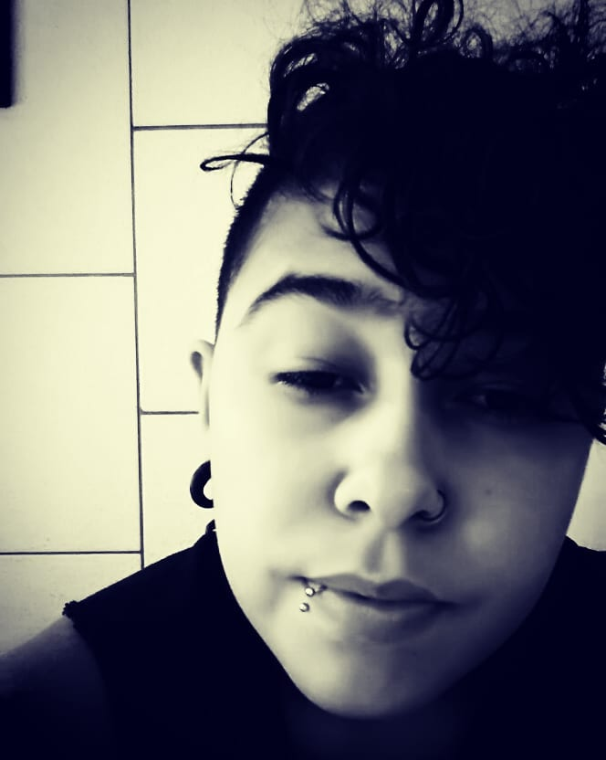

Estudante de Desenvolvimento Web Full Stack - Labenu
|  | Eu sou Aline Vignoli, nasci em Rio Grande/RS e moro em Florianópolis/SC. Tenho 32 anos, e trabalho com tatuagem desde os 19. Sempre tive curiosidade em tudo o que envolvia lógica. Mas a descoberta do mundo da programação veio esse ano. Conheci a Labenu atravéz do Instagram e embarquei nessa jornada. |
Site desenvolvido por Aline Vignoli